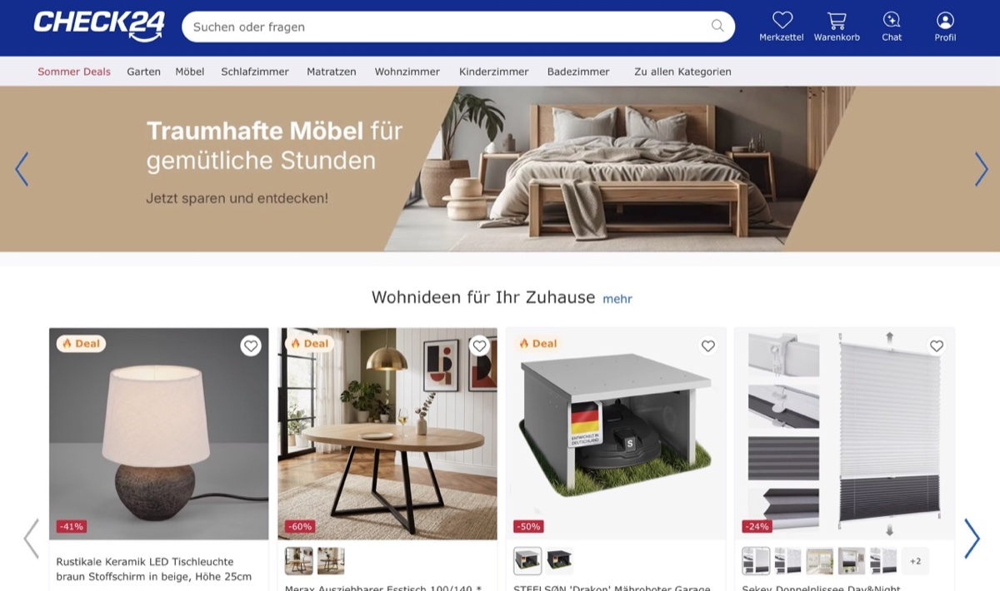

CHECK24
Modernizacja backendu w sześć miesięcy
Engineering Manager · Development Team Lead — Monachium · 2022 – 2025
CHECK24 to największy portal porównawczy w Niemczech. Produkt, do którego dołączyłem, działał na starym stosie i na bare metal.
Jako Engineering Manager prowadziłem modernizację backendu — z Laminas na Doctrine w sześć miesięcy — nagrodzoną wewnętrzną nagrodą za produkt najbardziej zorientowany na klienta. Równolegle przeprowadziliśmy transformację DevOps/SRE: z Ansible na bare metal do Kubernetesa, Helma i Bitbucket Pipelines, ze środowiskami testowymi na jedno kliknięcie, observability i CI ze statyczną analizą i testami.
Wcześniej jako Development Team Lead odpowiadałem za serwis śledzenia dostaw z czteroosobowym zespołem backendu: wprowadziłem Scrum, ustabilizowałem stary system i podniosłem jakość przez code review i testy.
6 mies. Laminas → Doctrine, nagrodzone
Zespół jako Team Lead: 4 backend, 2 PM.


Głosy zespołu
Exceptional as team lead and as a developer. He prioritised his team’s well-being and was always willing to go the extra mile.

Michael Erhard — Bereichsleiter · bezpośredni przełożony
An exceptional team leader who delivers high-quality projects on time and fosters a positive, inclusive team.
Committed to the goal even under a tight deadline — passionate about coding, with a calm, can-do attitude every company should be happy to have.

Belma Herenda — Team Lead Software Developer · współpraca między zespołami